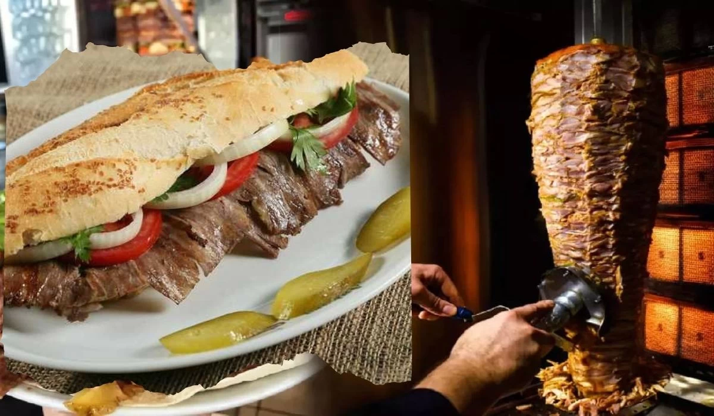
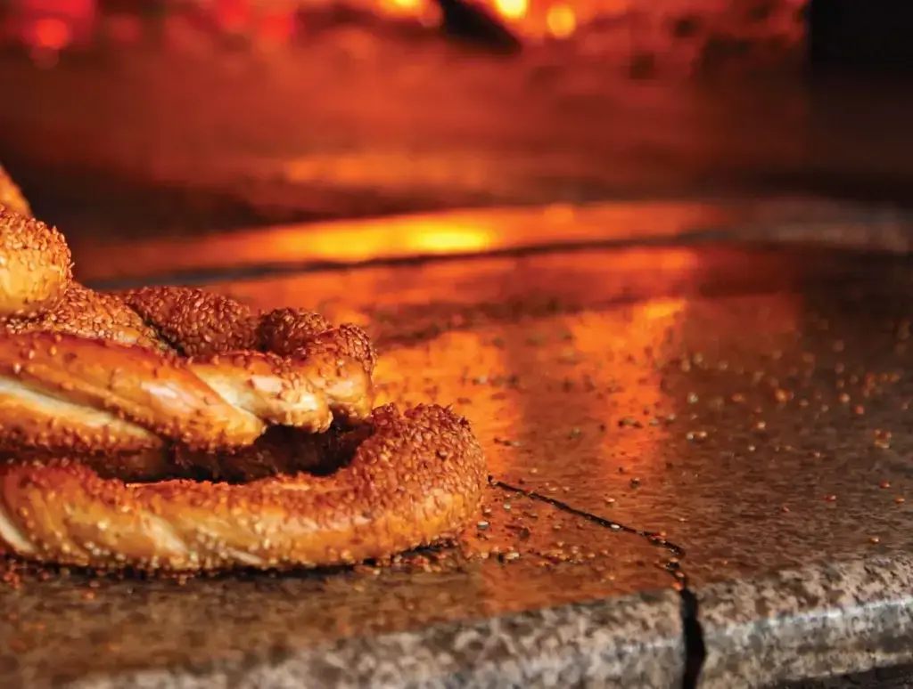
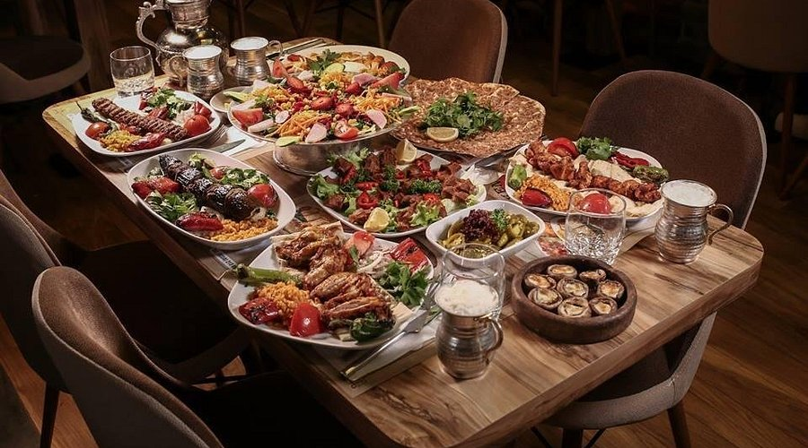

Özenle seçilmiş dana ve kuzu etinin kuyruk yağı ile marine edilip meşe odununda pişirilmesiyle hazırlanır.

Koyu renkli, çıtır çıtır ve bol susamlı yapısıyla diğer simitlerden ayrılan yöresel bir lezzettir.

ASPAVA, Ankara'ya özgü bir gastronomi kültürü olan, "Allah Sağlık Para Afiyet Versin Amin" baş harflerinden oluşan ismiyle bilinen ve ana yemeğin yanında ikram edilen sınırsız mezeleri, salatası, patates kızartması ve sonrasındaki irmik helvası ile çay ikramıyla meşhur bir restoran konseptidir.